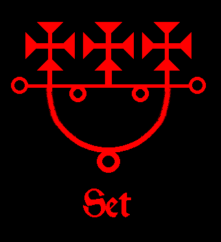
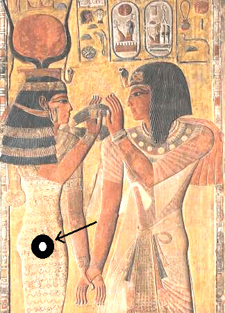
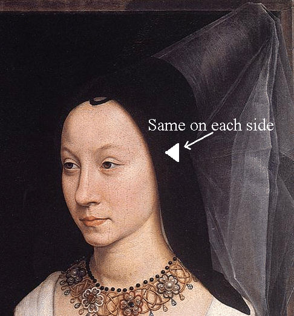

|  | The three equal armed crosses, as seen in Set's Sigil at left, represent the three chakra pairs. I also believe this was the message of the three pyramids at Giza, Egypt, as they are shaped as the chakras. Astaroth's Sigil at right illustrates this concept with the bars on each side. |
|  | The hip chakras are the same on each side and at the center of the hip, standing sideways, as seen in the art work at left. |
|  | The temple chakras are located right behind the temples, as shown on the left, a bit forward from the tip of the ear. When you successfully open and align these chakras, you will feel a pressure sensation or a dull ache, as with the third eye and other chakras. This is a positive indicator that they have been correctly located and activated. |
© Copyright 2007, 2013, Joy of Satan Ministries;
Library of Congress Number: 12-16457
Back to the Chakra Alignment Page
BACK TO SATANIC POWER MEDITATION MAIN PAGE